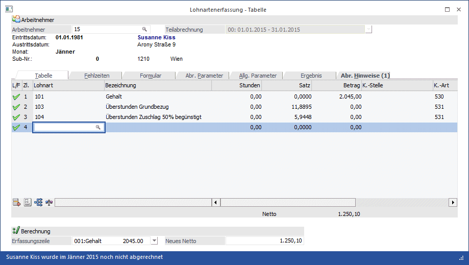
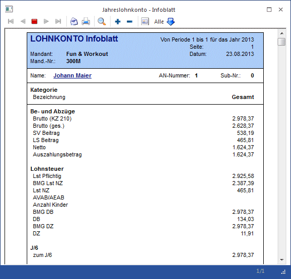

Im Programmpunkt
1 Abrechnen
1 Einzelabrechnung
oder Schnellaufruf
1 STRG + E
werden alle Bezüge und Abzüge erfasst bzw. berechnet.

Das Fenster gliedert sich in 6 Teile, in denen unterschiedliche Aktionen vorgenommen werden können:
ü Lohnartenerfassung - Tabelle
In
diesem Fenster werden alle Be- und Abzüge erfasst.
ü Lohnartenerfassung -
Fehlzeiten
Hier können Fehlzeiten wie Kranken- oder Urlaubstage verwaltet
werden.
ü Lohnartenerfassung -
Formular
In diesem Fenster kann eine Vorschau des Abrechnungsbeleges
angesehen werden.
ü Lohnartenerfassung -
Abr.Parameter
In diesem Fenster können die Abrechnungs-Parameter pro
Arbeitnehmer geändert werden.
ü Lohnartenerfassung - Allg.
Parameter
In diesem Fenster können die Allgemeinen Parameter pro Arbeitnehmer
geändert werden.
ü Lohnartenerfassung -
Abrechnungsergebnis
In diesem Fenster wird das Abrechnungsergebnis mit all
ihren Werten angezeigt.
ü Lohnartenerfassung -
Abrechnungshinweise
In diesem Fenster werden wichtige Informationen zur
aktuellen Abrechnung gegeben.
Im ersten Fenster "Lohnartenerfassung - Tabelle" können folgende Felder bearbeitet werden:
Ø Arbeitnehmer
Eingabe der Arbeitnehmernummer, für die Bezüge erfasst werden sollen. Wie die AN-Nummer eingegeben werden kann, dazu gibt es mehrere Möglichkeiten. Details dazu entnehmen Sie bitte dem Kapitel Aufruf einer AN-Nummer.
Wenn ein AN zur Abrechnung übernommen wurde, werden AN-spezifische Daten angezeigt. Standardmäßig sind das AN-Name und Anschrift, Eintritts- und Austrittsdatum und aktuelles Abrechnungsmonat.
Diese Informationen sind aber frei definierbar und können über das Formular "P03W20I - Abrechnung - Arbeitnehmerinformationen" verändert werden. Damit können die Informationen angedruckt werden, die für den Lohnverrechner relevant sind - es stehen alle Variablen aus dem AN-Stamm zur Verfügung.
Wenn die Arbeitnehmernummer bestätigt wurde, gibt es mehrere mögliche Szenarien:
ü Der AN wurde in der
Abrechnungsperiode noch nicht bearbeitet:
Es werden alle im AN-Stamm
hinterlegten Lohnarten entsprechend der Lohnartenformel abgearbeitet. Zusätzlich
werden Stamm-Informationen des AN angezeigt.
Ausnahme: Wenn der AN mit
Kurzarbeit abgerechnet werden soll, so werden die Kurzarbeitslohnarten aus den
Betriebsdaten geladen. Diese können durch Anklicken des Buttons "Auto. LA"
wieder auf die beim AN hinterlegten automatischen Lohnarten geändert werden.
ü Der AN wurde in der
Abrechnungsperiode bereits bearbeitet:
Es werden alle Lohnarten, die bisher
für den AN erfasst wurden, und die AN-Stamm-Informationen angezeigt.
ü Für den AN wurden SUB-AN
angelegt
Wenn ein AN mit SUB-AN angelegt wurde (siehe auch Kapitel Wozu
werden SUB-AN benötigt?), wird ein Fenster geöffnet, wo alle vorhandenen SUB-AN
angezeigt werden. Der gewünschte AN kann ausgewählt werden.
ü AN ist inaktiv oder AN ist auf
"nicht abrechnen" gesetzt
Wenn ein AN aufgerufen wird, der nicht aktiv ist
bzw. der nicht abgerechnet werden soll, kommt ein entsprechender Hinweis, und es
kann selbst entschieden werden, was in weiterer Folge gemacht werden soll.
ü AN hat ein Eintrittsdatum, das
nach der aktuellen Abrechnungsperiode ist
Wenn ein AN bereits angelegt und
mit einem Eintrittsdatum versehen ist, das außerhalb der aktuellen
Abrechnungsperiode (in der Zukunft) liegt, wird ebenfalls eine entsprechende
Meldung "Das Eintrittsdatum 01-02-2007 des Arbeitnehmer Johann Maier liegt nach
der aktuellen Abrechnungsperiode. Soll die Abrechnung trotzdem erfasst werden?"
ausgegeben, nd es kann selbst entschieden werden, was in weiterer Folge gemacht
werden soll.
Ø Teilabrechnung
Wurden durch die Beschäftigungen im Arbeitnehmerstamm Teilabrechnung erzeugt (mehrere Beschäftigungen in einer Periode oder Tarifgruppenwechsel innerhalb der Periode), so kann aus der Auswahllistbox die entsprechende Abrechnung gewählt werden. Die Erfassung erfolgt immer für jene Abrechnung (Abrechnungszeitraum) die unter Teilabrechnung angezeigt wird.
Hinweis:
Sind mehrere Teilabrechnungen vorhanden, so werden bei Durchführung der Abrechnung immer alle Teilabrechnungen des Arbeitnehmers abgerechnet.
Nach Abarbeitung der Standardlohnarten bzw. nach Auflistung der bereits erfassten Lohnarten können weitere Lohnarten manuell erfasst werden (z.B. Überstunden, Aconto-Zahlungen etc.), wobei folgende Felder zur Verfügung stehen:
Ø L/F
In dieser Spalte wird der Status der Lohnart angezeigt, wobei es 3 Möglichkeiten gibt:
ü Normale Lohnart
Es handelt sich um eine
"normale" Lohnart.
ü Ausbezahltes Aconto
Es handelt sich um
eine Aconto-Lohnart (Abrechnungsschema 5), die bereits ausbezahlt wurde.
(Details dazu finden Sie auch im Kapitel Aconti).
Ø Zl.
In diesem Feld wird die Zeilennummer angezeigt, die vom Programm automatisch vergeben wird. Die Zeilennummer kann auch am Abrechnungsbeleg angedruckt werden.
Ø Lohnart
Eingabe der abzurechnenden Lohnart. Durch Anklicken der Lupe kann nach angelegten Lohnarten gesucht werden. Mit der Bestätigung der Lohnart wird zuerst die Lohnartenbezeichnung angezeigt, danach wird dann die Formelabarbeitung gestartet.
Folgende Möglichkeiten der Eingabe sind denkbar:
ü Die Lohnart ist so angelegt, dass gespeicherte Werte zur Abrechnung herangezogen werden.
ü Der Faktor muss eingegeben werden, die Satzanzahl ist gespeichert und wird mit dem Faktor multipliziert und abgespeichert.
ü Es muss nur der Gesamtbetrag eingetragen werden, der dann gespeichert wird.
ü Es müssen alle drei Eingabefelder ausgefüllt werden.
Wenn zu den einzelnen Lohnarten auch noch Kostenrechnungsinformationen eingegeben werden müssen, so muss das über die Formel gesteuert werden (siehe auch Formel). Diese Felder können aber auch manuell in der Tabelle verändert werden.
Nach der Erfassung werden die Lohnarten zuerst nach der Sortierstufe und im Anschluss nach der Lohnartennummer sortiert. Mit dieser Sortierung kann die sonst herrschende alphanumerische Sortierung umgangen werden.
Beispiel:
|
Lohnart |
Sortierstufe |
Lohnart |
Sortierstufe |
|
1 |
1 |
1 |
1 |
|
11 |
1 |
3 |
1 |
|
3 |
3 |
4 |
1 |
|
4 |
4 |
11 |
2 |
Im rechten Beispiel übersteuert die Sortierstufe die Lohnart.
Die Felder
Ø Stunden
Ø Satz
Ø Betrag
können nur durch die Formel eingegeben bzw. verändert werden.
Ø K.-Stelle
Die Kostenstelle und wird aus dem AN-Stamm vorgeschlagen. Handelt es sich bei der Lohnart um eine Sonderzahlung und ist in den Betriebsdaten eine "Hilfskostenstelle für Sonderzahlungen" hinterlegt, dann wird diese Kostenstelle vorgeschlagen. Die Kostenstelle kann entweder über die Formel oder direkt in der Tabelle verändert werden. Die Kostenstelle wird für die automatische Übernahme in die WinLine KORE benötigt.
Achtung:
Wird im AN-Stamm im Register "Profit C." die Option "Aufteilung erfolgt nach den oben eingetragenen Verteilungsschlüssel" eingestellt, dann wird in der Erfassung keine Kostenstelle vorgeschlagen und diese kann auch nicht verändert werden.
Ø K.-Art
Die Kostenart kann - abhängig von den Einstellungen in den LOHN-Parametern (siehe Kapitel LOHN-Parameter im Handbuch WinLine START) aus den Lohngruppen oder aus den in den Lohngruppen hinterlegten FIBU-Konten eingelesen werden. Die Kostenart kann entweder über die Formel oder direkt in der Tabelle verändert werden.
Ø K.-Träger
Der Kostenträger wird ebenfalls aus dem AN-Stamm übernommen. Der Kostenträger kann entweder über die Formel oder direkt in der Tabelle verändert werden.
Die drei Felder K.-Stelle, K.-Art und K.-Träger werden nicht befüllt, wenn in der Lohnart die Checkbox "keine Kostenrechnung" aktiviert ist. Wenn im AN-Stamm im Register "Profit Center" die Option "Aufteilung erfolgt nach den oben eingetragenen Verteilungsschlüssel" eingestellt ist, dann kann das Feld K.-Stelle nicht verändert werden.
Ø Betrieb
Die Betriebsnummer wird ebenfalls aus dem AN-Stamm übernommen. Die Betriebsnummer wird z.B. für die Bruttolohnauswertung (Zusatzprogramm zum WinLine LOHN) benötigt.
Ø Auszahlung
Handelt es sich bei der Lohnart um ein bereits ausgezahltes Aconto, dann wird hier das Datum der Auszahlung angezeigt.
Hinweis
Die Spalten L/F, Zl., Lohnart und Bezeichnung sind "fixiert". Das bedeutet, dass wenn man sich in der Erfassungszeile nach rechts bewegt, dann bleiben diese 4 Spalten auf alle Fälle sichtbar. Die Fixierung kann allerdings über die rechte Maustaste, Option "Spaltenfixierung entfernen" aufgehoben werden.
Korrekturen von Eingaben
Sollten Werte korrigiert werden, ist folgendermaßen vorzugehen:
Die Lohnart wird in der Eingabemaske angeklickt. Durch Drücken der Tastenkombination ALT + O (bzw. durch Anklicken des Formel-Buttons) wird die Abarbeitung der Formel nochmals gestartet, und die Werte können ggf. (abhängig von der Formel) geändert werden.
Nach jeder Korrektur bzw. nach jeder Änderung und/oder nach jedem Hinzufügen von Lohnarten wird die Belegformel, die bei den Lohnarten hinterlegt ist, abgearbeitet. Dadurch können Speicher neu gefüllt bzw. Werte neu berechnet werden.
Beispiel:
In der Lohnart wird über die Zeilenformel ein Betrag aus den AN-Konstanten abgeholt, der dann noch editiert werden kann.
Der Überstundensatz errechnet sich aus den zuvor eingegeben Betrag. Wird nun die erste Lohnart geändert, muss sich auch der Überstundensatz ändern - dies wird eben durch die Belegformel gewährleistet.
Behandlung von nicht benötigten Lohnarten
Wurde in den Stammdaten eine Lohnart hinterlegt, die bei der aktuellen Abrechnung nicht zum Tragen kommt, (z. B. Überstundengrundgehalt und Überstunden Zuschlag 50 %) wird das Eingabefeld mit der RETURN-Taste bestätigt. Im Fenster "Bruttolohnerfassung" wird die Lohnart mit den Werten Null angezeigt, am Lohnzettel wird sie aber nicht angedruckt.
Nicht benötigte Lohnarten können aber auch gelöscht werden. Dazu wird die entsprechende Lohnart in der Eingabemaske angeklickt, danach kann der ENTFERNEN-Button oder die Tastenkombination ALT + F gedrückt werden. Dadurch wird die Lohnart gelöscht.
Wenn alle Lohnarten für den Arbeitnehmer erfasst wurden, können verschiedene Arbeitsschritte durchgeführt werden:
Erfassen von Fehlzeiten
Durch Anwahl des Registers "Fehlzeiten" können für den AN Fehlzeiten (Krank, Urlaub etc.) hinterlegt werden.
Abrechnungsergebnis ansehen
Durch Anwahl des Registers "Formular" kann eine Vorschau des Abrechnungsbeleges angesehen werden. Durch Anwahl des Registers "Ergebnis" kann eine Vorschau der Abrechnung mit all ihren Werten angesehen werden (siehe auch Kapitel Lohnartenerfassung - Abrechnungsergebnis).
Ändern der Parameter für die Abrechnung
Durch Anwahl des Registers "Parameter" können die Einstellungen für diese Abrechnung verändert werden (siehe auch Kapitel Lohnartenerfassung - Parameter).
Erfassung des nächsten Arbeitnehmers
Durch Drücken der Tastenkombination SHIFT + TAB können Sie in das Eingabefeld Arbeitnehmer wechseln. Dort können Sie die Nummer des nächsten Arbeitnehmers eingeben. Die Meldung
kann mit der RETURN-Taste bestätigt werden. Die erfassten Zeilen werden gespeichert und stehen somit auch für eine eventl. Stapelabrechnung zur Verfügung. Für den nächsten Arbeitnehmer werden die Lohnarten entsprechend dem Arbeitnehmerstamm zur Eingabe vorgeschlagen bzw. automatisch abgearbeitet.
Soll die Meldung "Es wurden Daten geändert. Sollen diese Änderungen gespeichert werden?" nicht erscheinen, so kann auch die F5-Taste gedrückt werden, damit werden alle erfassten Werte gespeichert und es kann der nächste AN eingegeben werden.
Nettoabrechnung
Durch Anklicken des Buttons NETTO bzw. durch Drücken der Tastenkombination ALT + N wird die Abrechnung des Arbeitnehmers gestartet. Die Meldung
wird, wenn keine Änderungen mehr vorgenommen werden müssen, mit RETURN bestätigt. Sollten noch Änderungen vorgenommen werden, so kann die Abrechnung mit der Tastenkombination ALT + N abgebrochen werden. Der Arbeitnehmer wird wieder aufgerufen und kann neuerlich bearbeitet werden.
Nettorückrechnung
Die Nettorückrechnung kann aufgrund eines gewünschten Nettobetrages das daraus resultierende Brutto berechnen. Diese Berechnung ist aber immer nur unter Bezugnahme einer Lohnart möglich.
Durchführung
In der Auswahllistbox
Ø Erf.-Zeile f. Berech.
kann die Lohnart gewählt werden, die die Basis für die Rückrechnung bilden soll (wo der Bruttowert zurückgerechnet werden soll). In der Auswahllistbox werden alle jene Lohnarten angeführt, die in der Abrechnung enthalten sind. Die gewählte Lohnart wird in der Erfassungstabelle mit gelber Farbe hinterlegt - so ist immer ersichtlich, auf welche Lohnart sich die Nettorückrechnung bezieht.
Sinnvollerweise wird hier nur eine Lohnart wie z.B. Grundlohn oder Gehalt gewählt werden.
Ø Neues Netto
In diesem Feld wird der gewünschte Nettobezug eingetragen. Nach Verlassen des Feldes wird sofort der neu errechnete Bruttobetrag in die Erfassungstabelle rückgeschrieben. Gleichzeitig wird der neu errechnete Bruttobetrag der gewählten Lohnart in den Zwischenspeicher gestellt. Damit kann dieser Wert mit der Tastenkombination SHIFT+EINFG in jedes Eingabefeld übernommen werden. Abhängige Lohnarten (z.B. Überstunden) können im Zuge der Nettorückrechnung nicht berücksichtigt werden.
Sonderfunktionen
Mit der Tastenkombination SHIFT + F5 können die bestehenden Erfassungszeilen gespeichert werden, ohne den dafür vorgesehenen Button anklicken zu müssen.
Buttons
Ø OK
Durch Anklicken des OK-Buttons bzw. durch Drücken der F5-Taste wird die Aktion ausgeführt, die in den LOHN-Parametern (siehe Kapitel LOHN-Parameter im Handbuch WinLine START) hinterlegt wurde. Wurde für den AN in der laufenden Abrechnungsperiode bereits eine Abrechnung durchgeführt und die Erfassung wird trotzdem nochmals gespeichert, dann wird folgende Meldung ausgegeben:
Wird die Meldung mit JA bestätigt, dann wird der AN nochmals neu abgerechnet. Wenn die Meldung mit NEIN bestätigt wird, dann bleibt die Einzelerfassung geöffnet, die Änderungen können nicht gespeichert werden. Wird das Fenster dann mit ESC beendet, dann gehen auch die durchgeführten Änderungen verloren.
Ø Ende
Durch Drücken der ESC-Taste wird das Fenster geschlossen, alle Änderungen gehen verloren.
Ø Netto
Durch Anklicken des NETTO-Buttons wird die Abrechnung gespeichert und ausgegeben.
Dabei kann es unterschiedliche Szenarien geben:
ü AN wurde bisher noch nicht
abgerechnet
Die Abrechnung wird durchgeführt.
ü AN wurde bereits abgerechnet
Es
erscheint ein entsprechender Hinweis: Für den AN wurde bereits eine Abrechnung
durchgeführt. Diese wird gelöscht. Abrechnung durchführen?
Wird die Option JA
gewählt, wird die bereits durchgeführte Abrechnung gelöscht und durch die neue
ersetzt. Wird die Option NEIN gewählt, bleibt die ursprüngliche Abrechnung
bestehen.
ü AN wurde bereits abgerechnet und
ausgezahlt
In dieses Fall wird ebenfalls eine entsprechende Meldung
ausgegeben, die darauf hinweist, dass bereits eine Abrechnung und eine
Auszahlung durchgeführt wurde. In diesem Fall muss man sich darum kümmern, dass
die Auszahlung nicht wiederholt wird bzw. das nur der Differenzbetrag ausbezahlt
wird.
Ø Pfändungsberechnungsblatt
Dieser Button ist nur dann aktiv, wenn beim AN eine Pfändung eingetragen ist. Durch Anklicken des Buttons wird eine Übersicht über die Berechnung der Pfändung dargestellt. Damit kann dann die jeweilige Berechnung Schritt für Schritt nachvollzogen werden. Am Ende wird auch eine ggf. vorzunehmende Aufteilung auf mehrere Pfändungen (bei gleichem Rang) dargestellt. Wenn in den LOHN-Parametern (WinLine START, Menüpunkt Parameter / Applikationsparameter) die Option "Ausgabe des Pfändungsberechnungsblattes bei der Abrechnung" aktiviert ist, dann wird das Pfändungsberechnungsblatt automatisch in den Spooler ausgedruckt, wobei auch gleichzeitig ein Archiv-Eintrag erstellt wird. Damit ist dann jederzeit nachvollziehbar, wie sich der Pfändungsbetrag ergeben hat.
Ø Lohnkonto
Wenn der Button Lohnkonto angeklickt wird, dann wird das "Jahreslohnkonto - Infoblatt" angezeigt. Durch Anklicken des Buttons ändert sich auch sein Aussehen, d.h. der Button wird dann aktiv dargestellt. Das bedeutet, dass nun immer zum aktuellen AN das jeweilige Jahreslohnkonto angezeigt wird. Der Button wird benutzerspezifisch gespeichert.
Im Jahreslohnkonto - Infoblatt werden alle abgerechneten Werte der bereits abgeschlossenen Perioden des aktuell aufgerufenen AN angezeigt. Die aktuelle Abrechnung ist in diesen Werten nicht enthalten.

Durch einen Klick auf den Namen des AN (der Name wird blau und unterstrichen dargestellt) wird das gesamte Jahreslohnkonto mit den einzelnen Monaten dargestellt.
Hinweis:
Wenn der Button "Lohnkonto" aktiviert ist und ein AN aufgerufen wird, der noch keine Abrechnung hat, dann wird das Fenster mit den Jahrelohnkontenwerten auch nicht angezeigt.
Ø Navigation
Durch die VCR-Buttons kann zwischen den einzelnen Einzelerfassungen gewechselt werden, ohne eine Erfassung speichern zu müssen oder einen neuen AN aufzurufen.
 Wechseln zur
Erfassung des ersten Arbeitnehmers (Tastatur STRG + SHIFT + POS1)
Wechseln zur
Erfassung des ersten Arbeitnehmers (Tastatur STRG + SHIFT + POS1)
 Wechseln zur
Erfassung des vorherigen Arbeitnehmers (Tastatur SHIFT - [numerischer
Ziffernblock])
Wechseln zur
Erfassung des vorherigen Arbeitnehmers (Tastatur SHIFT - [numerischer
Ziffernblock])
 Wechseln zur
Erfassung des nächsten Arbeitnehmers (Tastatur SHIFT + [numerischer
Ziffernblock])
Wechseln zur
Erfassung des nächsten Arbeitnehmers (Tastatur SHIFT + [numerischer
Ziffernblock])
 Wechseln zur
Erfassung des letzten Arbeitnehmers (Tastatur STRG + SHIFT + ENDE)
Wechseln zur
Erfassung des letzten Arbeitnehmers (Tastatur STRG + SHIFT + ENDE)
Hinweis:
Beim Blättern der Arbeitnehmer in der Abrechnung mit den VCR-Buttons werden inaktive AN nicht berücksichtigt.
Über die Applikations-Parameter im WinLine START kann gesteuert werden, wie sich das Programm verhalten soll, wenn sich Änderungen in der Erfassung ergeben haben. Dabei gibt es folgende Varianten:
ü Änderung verwerfen
Das ist die
Standardoption. Damit werden eventl. durchgeführte Änderungen nicht
gespeichert.
Hinweis: Wenn diese Option aktiviert ist, und es
werden Abrechnungen neu erfasst, so sollten die VCR-Buttons nicht verwendet
werden.
ü Erfassung speichern
Mit dieser
Option werden durchgeführte Änderungen automatisch gespeichert.
Hinweis: wurde ein AN bereits abgerechnet und dann eine
Änderung durchgeführt, dann wird ein entsprechender Hinweis ausgegeben, dass die
Abrechnung gelöscht und neu durchgeführt werden muss - erst damit kann dann die
Änderung gespeichert werden.
ü Erfassung speichern und das Netto
berechnen
Mit dieser Option werden alle Erfassungen bzw. Änderungen
gespeichert und es wird auch gleich eine Netto-Abrechnung durchgeführt. Ist
bereits eine Abrechnung vorhanden, wird eine entsprechende Meldung
ausgegeben.
ü Fragen
Mit dieser Option
kann pro Datensatz entschieden werden, welche Aktion ausgelöst werden soll.
Dabei werden folgende Operationen angeboten:
Speichern
Es
werden nur die Erfassungszeilen gespeichert.
Abrechnen
Es wird
eine Abrechnung durchgeführt
Abbrechen
Man gelangt wieder in
das Erfassungsfenster zurück.
Ø Entfernen
Durch Anklicken des Entfernen-Buttons wird die gerade aktive Erfassungszeile gelöscht.
Ø Formel
Durch Anklicken des Formel-Buttons wird die Abarbeitung der Formel der gerade aktiven Lohnart gestartet.
Ø Auto. LA
Durch Anklicken dieses Buttons können die automatischen Lohnarten (das sind die Lohnarten, die im AN-Stamm hinterlegt sind) abgearbeitet werden. Es wird folgende Meldung angezeigt:
Wird die Meldung mit Ja bestätigt, werden die automatischen Lohnarten (inkl. Formeleingaben) abgearbeitet. Dabei werden bestehende Lohnarten aber nicht überschrieben. Wird die Meldung mit Nein bestätigt, dann bleiben die vorhandenen Erfassungszeilen bestehen, es erfolgen keine Änderungen.
Ø KUG LA
Dieser Button steht nur dann zur Verfügung, wenn im AN-Stamm eingestellt ist, dass für den AN Kurzarbeit berechnet werden soll. Damit können dann die Lohnarten geladen werden, die in den Betriebsdaten als "Kurzarbeitslohnarten" definiert wurden. Stattdessen werden dann die Lohnarten aus der Erfassungstabelle gelöscht, die als "Lohnarten zur Bildung des letzten Vollen Bezugs" definiert wurden.
Bevor die Lohnarten ausgetauscht werden, wird noch folgende Meldung angezeigt, die entsprechend bestätigt werden muss:
Ø Tabelleneinstellungen speichern
Die Spalten einer Tabelle können grundsätzlich an beliebige Positionen verschoben, bzw. in der Breite entsprechend angepasst werden. Durch Anwahl des Buttons "Tabelleneinstellungen speichern" werden die Einstellungen benutzerspezifisch gespeichert und bei dem nächsten Aufruf des Programmpunktes wieder vorgeschlagen.
Ø Gesamteinstellungen speichern
Im Gegensatz zu "Tabelleneinstellungen speichern" können mit "Gesamteinstellungen speichern" mehrere Tabellenaufbauten gespeichert und nach Wunsch geladen werden. Zusätzlich werden Sonderfunktionen der Tabelle (z.B. "Spalte gruppieren") ebenfalls bei der Speicherung bedacht.
Statuszeile
In der Statuszeile des Fensters (letzte Zeile im Fenster) wird der aktuelle Status des AN angezeigt. Hier ist ersichtlich, ob der AN in der entsprechenden Periode bereits abgerechnet wurde oder nicht. Ist bereits eine Abrechnung vorhanden, dann wird das Datum und die Uhrzeit der Abrechnung angezeigt. Wurde zusätzlich auch noch eine Auszahlung durchgeführt, wird auch das Datum der Auszahlung angezeigt.
Beispiel für eine Statuszeile:
Johann Maier wurde im November 2006 am 27-11-2006 11:58:49 abgerechnet und am 29-11-2006 ausgezahlt.
Ø Register Chaos-Erfassung
Ausgehend von der Einzelerfassung kann jederzeit die Chaos-Erfassung aufgerufen werden. In der Chaos-Erfassung können AN und Lohnarten in beliebiger Reichenfolge erfasst und auch gespeichert werden (Details siehe Kapitel Chaos Erfassung).
Hinweis zur Bearbeitung in der Erfassungstabelle
Bei der Erfassung von Lohnarten (in der Einzelerfassung oder in der Rollung) kommt es oft vor, dass das Programm nicht das zu tun scheint, was der Anwender erwartet.
Dies liegt aber nicht daran, dass das Programm nicht korrekt arbeitet, sondern das liegt meistens an den Formeln.
In der WinLine gibt es ein Formelsystem, das viele Möglichkeiten bietet. Unter anderem die Möglichkeit, zwischen Zeilenformel und Belegformel zu unterscheiden.
Die Zeilenformel ist dazu da, um Eingaben vornehmen zu können, z.B. Eingabe der gearbeiteten Stunden, Eingabe einer Prämie oder dergleichen.
Die Belegformel dient der Berechnung von diversen Werten oder zur Füllung von Speichern, die dann von anderen Formeln verwendet werden, z.B. zur Errechnung des Überstundensatzes oder zur Berechnung einer Abfertigung.
Der Vorteil von diesem System ist, dass die Belegformel bei jeder Änderung der Lohnarten neu ausgeführt wird und somit alle berechneten Werte aktualisiert werden. Wenn z.B. der Gehalt geändert wird, ändert sich auch gleich der Überstundensatz, der ja vom Gehalt abhängig ist.
Nun kann es trotzdem zu folgendem Fall kommen:
Es wird die Lohnart Gehalt aufgerufen, es wird ein Betrag aus den AN-Konstanten vorgeschlagen, der dann noch editiert werden kann. Obwohl der vorgeschlagene Betrag überschrieben und bestätigt wurde, steht wieder der alte Wert in der Erfassungstabelle. Warum?
Die Formeln wurden aus der alten Version 1:1 übernommen. Im Zuge dessen wurden auch die Formeln umgestellt, wobei sowohl die Zeilen- als auch die Belegformel beschickt wurde. Unterschiede zwischen den beiden Formeln ist nur der, dass es bei der Belegformel keine Eingaben gibt.
Nun zu dem oben erwähnten Fall:
Über die Zeilenformel wurde definiert, dass eine AN-Konstante abgerufen wird, die dann noch editiert werden kann.
In diesem Fall sieht die Formel so aus:
'Formel: 101-Z-300M
'Beschreibung: Zeilenformel Gehalt
Function Formel ()
'Ihre Formel kommt hierher
Betrag = ANKonstante( 1 )
EingabeBetrag "Geben Sie den Betrag ein"
Zwischenspeicher ( 2 ) = ANKonstante( 1 )
Formel = 1 'successful
End Function
Zuerst wird ein Betrag aus der AN-Konstante 1 geholt. Dieser Betrag wird zum Editieren vorgeschlagen. Danach wird der Wert in einen Zwischenspeicher gestellt. Und damit ist die Zeilenformel beendet.
Als nächstes wird die Zeile verlassen, was dazu führt, dass die Belegformel ausgelöst wird. Diese wurde von der Zeilenformel übernommen - allerdings ohne Eingabe-Befehle. Daher sieht die Belegformel wie folgt aus:
'Formel: 101-B-3999
'Beschreibung: Belegformel Gehalt
Function Formel ()
'Ihre Formel kommt hierher
Betrag = ANKonstante( 1 )
'EingabeBetrag "Geben Sie den Betrag ein"
Zwischenspeicher ( 2 ) = ANKonstante( 1 )
Formel = 1 'successful
End Function
Es wird wieder die AN-Konstante 1 geholt und somit wird der zuvor eingegebene Werte überschrieben. In diesem Fall würde es sich empfehlen, die Zeile
Betrag = ANKonstante( 1 )
aus der Belegformel zu löschen.
Im Demomandanten (300M) wurden alle Lohnarten bereits auf das neue System umgebaut.
Anhand der Lohnarten 1, 3 und 4 lässt sich diese Funktionalität schön nachvollziehen:
Die Lohnart 1 beschickt einen Speicher und die Lohnarten 3 und 4 holen sich ihre Werte aufgrund dieses Speichers.
Zuerst wird die Lohnart 1 aufgerufen (z.B. mit dem AN-Nr. 11). Dort wird eine Stundenanzahl von 165 eingetragen. Der sich errechnete Betrag wird zur Bearbeitung vorgeschlagen, kann aber bestätigt werden.
Danach wird die Lohnart 3 und 4 aufgerufen, wobei jedes Mal z.B. 6 Stunden eingegeben werden.
Nun wechseln Sie auf die Zeile mit der Lohnart 1 und klicken Sie jetzt auf den Formel-Button. Die Formel wird nochmals abgearbeitet und jetzt geben Sie z.B. 172 Stunden ein. Wenn Sie jetzt den Betrag, der zum Editieren vorgeschlagen wird, bestätigen, dann sehen Sie, dass auch gleich der Überstundensatz verändert wurde.